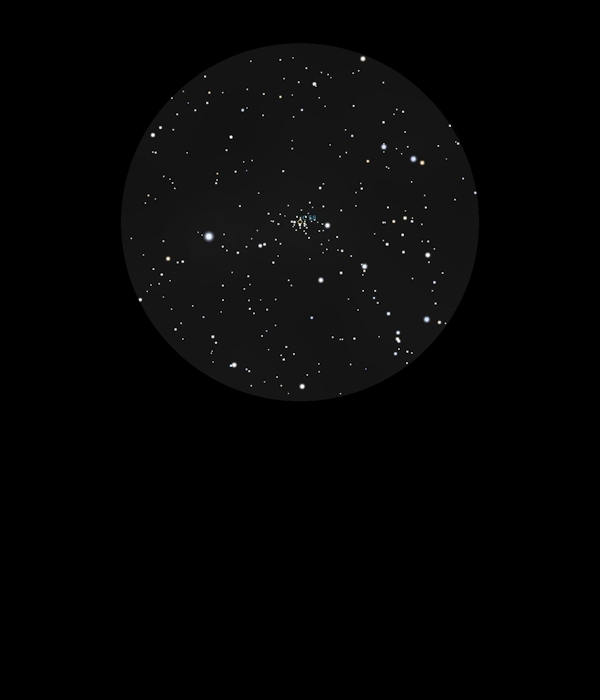

NGC 2360
Open Cluster in Canis Major
NGC 2360
Mag 7.2
Caldwell 58. Caroline's Cluster
20/01/17
A really attractive Open Cluster of very faint stars, little
more than stardust but quite dense
Shares the same 24mm FOV as HIP35180 at Mag 5.45
Zooming in does not really resolve many more members... Nice